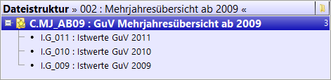

3.3 Dateistrukturen
Sie gelangen in den Menüpunkt Dateistrukturen über das Hauptmenü Dateien > Dateistrukturen.
Hier haben Sie die Möglichkeit, mehrere Dateien in Strukturbäumen darzustellen. Dies ermöglicht eine Verknüpfung mehrerer Dateien, somit sind bspw. Ist/Ist-Vergleiche einfach erstellbar.
Der Untermenüpunkt Dateistrukturen unterteilt sich in die Registerkarten Übersicht, Dateistruktur, Optionen, Zuordnungen, Benutzerrechte sowie Gruppenrechte. Zur effektiven Erstellung Ihrer individuellen Dateistrukturen folgen Sie bitte den Registerkarten von oben nach unten.
Mit der Tastenkombination Alt +Doppelklick auf eine Dateistruktur gelangen Sie in die Struktur. Diese Tastenkombination können Sie in jeder Übersichtsmaske von Kosy Enterprise verwenden, um in die nächste Registerkarte zu gelangen.
Übersicht
In der Übersicht finden Sie eine Auflistung aller Dateistrukturen des ausgewählten Mandanten. Über den Button  können neue Dateistrukturen angelegt, über den Button
können neue Dateistrukturen angelegt, über den Button  können angelegte Dateistrukturen gelöscht werden. Zur Anzeige und Bearbeitung der Daten innerhalb dieser Registerkarte greift Kosy Enterprise auf die im Abschnitt Maskenansichten und Standardmaske beschriebene Standardmaske zurück.
können angelegte Dateistrukturen gelöscht werden. Zur Anzeige und Bearbeitung der Daten innerhalb dieser Registerkarte greift Kosy Enterprise auf die im Abschnitt Maskenansichten und Standardmaske beschriebene Standardmaske zurück.
Ein Datensatz einer Dateistruktur besteht aus Kurzbezeichnung, Titel, Notiz und Farbe. Eine ausführliche Beschreibung der einzelnen Felder finden Sie im Abschnitt Planungsstrukturen.
Dateistruktur
Haben Sie in der Übersicht eine Dateistruktur angelegt und markiert, wechseln Sie in die Registerkarte Dateistruktur. In der Menüleiste erkennen Sie, in welcher Struktur Sie sich befinden.
Bei einer neuen Dateistruktur sind noch keine Verbindungen vorhanden. Sie haben hier die Möglichkeit, über das Symbol  neue Verbindungen per Hand anzulegen oder über
neue Verbindungen per Hand anzulegen oder über  Verbindungen zu importieren. Klicken Sie auf das entsprechende Symbol und folgen Sie dem automatisch öffnenden Assistenten.
Verbindungen zu importieren. Klicken Sie auf das entsprechende Symbol und folgen Sie dem automatisch öffnenden Assistenten.
Bearbeitungsleiste
| Symbol | Bezeichnung | Tastenkombination | Funktionsweise |
|---|---|---|---|
| neue Verbindung anlegen | Einfg | Es wird eine neue Verbindung angelegt. | |
| Verbindung(en) löschen | Entf | Es wird/werden die markierte(n) Verbindung(en) gelöscht. | |
| Dateistruktur auf- und zuklappen | Die Struktur kann vollständig oder teilweise auf- und zugeklappt werden. | ||
| Dateistruktur durchsuchen | Strg+F | In der Struktur wird nach einer Datei gesucht. | |
| Dateistruktur aktualisieren | F5 | Die Dateistruktur wird aktualisiert. | |
| Verbindungen ausführen | Die Verbindung(en) werden ausgeführt. | ||
| Dateistruktur in eine Datei importieren | Die Dateistruktur wird importiert. | ||
| Dateistruktur aus einer Datei exportieren | Die Dateistruktur wird exportiert. | ||
| Dateistruktur drucken | Die Dateistruktur wird gedruckt. |
Bearbeitungsleiste Dateistrukturen
Strukturbaum

Exemplarische Darstellung einer Dateistruktur
Über die Dateistrukturen können Sie Verbindungen zwischen Dateien schaffen. Die obige Abbildung "Exemplarische Darstellung einer Dateistruktur" zeigt exemplarisch eine Mehrjahresübersicht. Hier wird die Mehrjahresdatei mit den Ist-Dateien der Jahre 2009-2011 verbunden, womit sie die Werte der Ist-Dateien erhält. Somit definieren Sie die Mehrjahresdatei als Zieldatei und die Ist-Dateien als Quelldateien.
Die Strukturbäume können jederzeit an die Erfordernisse angepasst werden. Seitens Kosy Enterprise gibt es keine Begrenzung bei der Anzahl der Tabellen. Die Handhabung des Strukturbaumes orientiert sich an den aus dem Windows Explorer bekannten Methoden. Halten Sie eine Datei mit der linken Maustaste „fest" und ziehen Sie sie auf eine andere Datei. Erscheint eine blaue Umrahmung, so wird das Element in die Gruppe des umrahmten Elements verschoben (verdichtet). Möchten Sie ein Element lediglich in der Struktur verschieben, so wählen Sie mit dem Mauszeiger den Zwischenraum zweier Elemente. Es erscheint eine blaue Linie, die Ihnen symbolisiert, an welcher Stelle Ihre Datei stehen wird. Lassen Sie die linke Maustaste los, so wird das Element verschoben.
Durch einen Rechtsklick auf eine Datei haben Sie die Möglichkeit, ein Kontextmenü zu öffnen, welches Ihnen eine weitere Bearbeitung der Dateien ermöglicht. Sie finden dort die Symbole aus der Bearbeitungsleiste wieder.
Sie haben die Möglichkeit, sich pro Datei Ihre Zugriffsberechtigung anzeigen zu lassen. Dafür machen Sie bitte einen Rechtsklick auf die Titelleiste der Dateistruktur. Es erscheint ein Kontextmenü, in welchem Sie sich z. B. Zugriff, Rechenregeln oder auch die Zahl der Unterelemente pro Ordner anzeigen lassen können. Wählen Sie z. B. Navigation, um die Auswahl Ihrer Navigationseinstellungen über die Navigationsleiste zu erkennen.
Navigationsleiste
Rechts neben Ihrem Strukturbaum finden Sie eine Navigationsleiste. Durch einen Linksklick auf  öffnet sich ein Kontextmenü, in welchem Sie Dateien nach ihren Eigenschaften auswählen. Durch die Pfeilsymbole können Sie dann zwischen den ausgewählten Dateien wechseln. Um Ihre Auswahl sichtbar zu machen, wählen Sie bitte im Kontextmenü der Titelleiste den Menüpunkt Navigation.
öffnet sich ein Kontextmenü, in welchem Sie Dateien nach ihren Eigenschaften auswählen. Durch die Pfeilsymbole können Sie dann zwischen den ausgewählten Dateien wechseln. Um Ihre Auswahl sichtbar zu machen, wählen Sie bitte im Kontextmenü der Titelleiste den Menüpunkt Navigation.
Detailansicht
Haben Sie die Detailansicht gewählt, so erscheint diese in einem neuen Fenster rechts neben dem Strukturbaum. Die Detailansicht beinhaltet zwei Registerkarten, welche sich auf die jeweilig markierte Datei beziehen.
Allgemein
In der Registerkarte Allgemein erscheinen die Informationen aus der Übersicht der Dateien. Sie erkennen hier den Dateityp und die Kurzbezeichnung der markierten Datei. Zusätzlich finden Sie hier den Titel sowie den Alternativtitel wieder. Ebenso erkennen Sie hier noch mal die Dimensionen der Datei. Natürlich sind auch hier wieder eine Farbwahl sowie eine Beschreibung der Datei durch Notiz und Bild möglich. Bei Bedarf können Sie hier alle Felder der Datei verändern.
In der zweiten Registerkarte Buchungsfelder haben Sie eine Übersicht der Buchungsfelder, die Sie für die Datei definiert haben. Diese Ansicht dient der Übersicht und kann bei Bedarf hier geändert werden. Bitte beachten Sie jedoch dabei, dass dies Grundeinstellungen der Datei sind und die Einstellungen keinen Einfluss auf die Dateistruktur haben. Eine Beschreibung der Bedienungsweise finden Sie im Abschnitt Übersicht der Dateien.
In der dritten Registerkarte Dimensionsfelder erlaubt eine tabellarische Übersicht der bestehenden Dimensionsfelder, die Sie für die Datei definiert haben. Beachten Sie, dass dies Grundeinstellungen der Datei sind und die Einstellungen keinen Einfluss auf die Dateistruktur haben. Eine Beschreibung der Bedienungsweise finden Sie im Abschnitt Übersicht der Dateien.
In der vierten Registerkarte Dimensionsfeldverknüpfungen haben Sie eine tabellarische Übersicht der Dimensionsfeldverknüpfungen, die Sie für die Datei definiert haben. Beachten Sie dabei, dass dies Grundeinstellungen der Datei sind und die Einstellungen keinen Einfluss auf die Dateistruktur haben. Eine Beschreibung der Bedienungsweise finden Sie im Abschnitt Übersicht der Dateien.
Struktur
In der Registerkarte Struktur geben Sie der gewählten Datei weitere Eigenschaften.
Ist der Haken bei Verbindung nach oben schichten gesetzt, so wird der Wert der Datei in die Summe der Verdichtung aufgenommen.
Durch die Option Eingabewerte berücksichtigen bestimmen Sie, ob bei der Verbindung auch Eingabewerte der eigenen Datei übernommen werden sollen oder lediglich verknüpfte Daten aus anderen Dateien.
Zusätzlich wird noch die Information der letzten Ausführung der Verbindungen angezeigt (ausgelöst durch Drücken der Startflagge ).
Optionen
Haben Sie die Verbindungen erstellt, wechseln Sie in die Registerkarte Optionen. Hierzu wählen Sie bitte in der Dateistruktur die erste Quelldatei aus und folgen dem Assistenten. Sie haben hier auch die Möglichkeit, Umlageschlüssel zu kopieren. Haben Sie alle Einstellungen getroffen, wechseln Sie zunächst in die Registerkarte Zuordnungen. Später wiederholen Sie bitte den Vorgang für die weiteren Quelldateien.
Hinweis
Achten Sie bei der Wahl Ihrer Optionen vor allem auf die Zuordnung der Elemente. Erst durch die Wahl „individuelle Zuordnung" können Sie in der Registerkarte Zuordnungen eine Auswahl treffen. Wählen Sie eine der anderen Optionen, werden die Zuordnungen automatisch getroffen.
Erklärung „erweiterte Vererbung":
Dazu sei zunächst gesagt, dass die „Vererbung" nur interessant ist, wenn man auf einen Knoten kopiert, d.h. in den Zuordnungen der Dateiverbindung ein Knotenelement als Ziel wählt. In diesem Fall wird der Wert auf die Unterelemente dieses Knotens kopiert. Auf diese Weise können Sie z.B. den gleichen Preis durch eine Zuordnung auf alle Verträge eines Tarifs schreiben.
Die Voraussetzung für diese Funktion war bisher lediglich, dass auf den Elementen der untersten Ebene unter dem Zielknoten in der Struktur die Option „Eingabewerte berücksichtigen" aktiviert war. Dies ist bei Elementen der untersten Ebene üblicherweise der Fall. Eventuell vorhandene Zwischenknoten unter dem Zielknoten hingegen durften diese Eigenschaft nicht haben, wenn sie den Wert an ihre Unterelemente weitergeben sollten. Andernfalls haben sie den Wert „selbst behalten". Das war meist unproblematisch, da Knoten diese Eigenschaft üblicherweise nicht besitzen.
Um diese starre Funktionsweise flexibler zu gestalten, wurde die „erweiterte Vererbung" eingeführt. Um weiterhin auch die bisherige Funktionsweise nutzen zu können, steht die „einfache Vererbung" zur Verfügung. Somit müssen bestehende Modelle nicht verändert werden.
Sobald Sie die „erweiterte Vererbung" nutzen, hat die Einstellung „Vererbung" in den Makros der Zuordnungen einen Einfluss darauf, wie der kopierte Wert ermittelt wird und wie er von den Zielknoten zu ihren Unterelementen weitergegeben (und entsprechend als Zuordnungen visualisiert) wird. Die Art der Ermittlung des Wertes ist nur relevant, wenn ein verdichtetes Quellelement zugeordnet wird. Die Unterelemente dieses Elements (bzw. das Element selbst, wenn es kein Knoten ist) werden im Folgenden kurz als „Quellelemente" bezeichnet.
Die möglichen Einstellungen sind...
-
nur Eingabeelemente: Die Werte der Quellelemente mit der Option „Eingabewerte berücksichtigen" werden in Summe auf die Zielelemente mit dieser Option kopiert. Besonderheit: Wenn ein Knoten diese Option gesetzt hat, werden dessen Unterelemente nicht mehr berücksichtigt. Dies gilt in Quelle und Ziel gleichermaßen. Für die Zielelemente entspricht das Verhalten somit der „einfachen Vererbung".
-
nur aus Eingabeelementen: Das Verhalten in der Quelle ist wie bei „nur Eingabeelemente", im Ziel erhalten unabhängig von den Optionen der Strukturelemente alle Blätter den Wert.
-
nur in Eingabeelemente: Die Werte der Quellelemente der untersten Ebene werden in Summe auf die gleichen Zielelemente wie bei „nur Eingabeelemente" kopiert.
-
alle Elemente: Die Werte der Quellelemente der untersten Ebene werden in Summe auf alle Blätter im Ziel kopiert.
-
direkt: Sämtliche Sonderfunktionen sind deaktiviert und es werden nur die tatsächlich zugeordneten Elemente beim Kopieren berücksichtigt.
Zuordnungen
Nach der Eingabe der Optionen treffen Sie in der Registerkarte Zuordnungen Ihre individuellen Zuordnungen für die von Ihnen gewählten Strukturen. Exemplarisch wird hier die Zuordnung der Zeitachsenelemente für die Mehrjahresübersicht dargestellt.
")
Individuelle Zuordnung der Zeitachse
Strukturansicht
In der Strukturansicht werden im linken Strukturbaum alle Elemente der Quelldatei angeboten. Im rechten Strukturbaum finden sich alle Elemente der Zieldatei. Bereits verknüpfte Elemente werden durch einen grünen Pfeil und ihrem jeweils verknüpften Gegenüber gekennzeichnet.
Zur Verknüpfung einzelner Elemente ziehen Sie diese mit Hilfe der linken Maustaste vom linken in den rechten Strukturbaum und lassen Sie auf dem gewünschten Zielelement fallen. Möchten Sie eine Verknüpfung wieder aufheben, so löschen Sie in der Registerkarte Makros die entsprechende Verknüpfung. Um bei einer Verknüpfung bestimmte Elemente auszuschließen, ziehen Sie die Verbindung mit der linken Maustaste vom rechten Strukturbaum auf die auszuschließenden Elemente im linken Strukturbaum. Anschließend wird diese Verknüpfung mit rotem Pfeil und durchgestrichen dargestellt.
Beispiel
Möchten Sie von 200 Elementen, die alle unter der gleichen Verbindung liegen, 198 Elemente verknüpfen, so ziehen Sie die Verbindung mit der linken Maustaste vom linken Strukturbaum auf das Pendant im rechten Strukturbaum. Damit sind alle 200 Elemente markiert. Wählen Sie nun die Elemente, die Sie nicht verknüpfen wollen (ausschließen möchten) und ziehen diese vom rechten Strukturbaum in den linken. Sie werden ausgeschlossen.
Alternativ haben Sie die Möglichkeit, eine automatische Zuordnung über den Schalthebel  in der Bearbeitungsleiste durchzuführen.
in der Bearbeitungsleiste durchzuführen.
Schaltflächen
| Symbole | Bezeichnung | Funktionsweise |
|---|---|---|
| automatisch zuordnen (1 zu 1) | Automatische Zuordnung auf gleiche Elemente (1 zu 1){:.img-tblcell}. Auswahlmöglichkeit in Eingabeelemente, aus Eingabeelemente oder alle Elemente. Sie haben hier die Wahl zwischen beliebiger und genauer Strukturposition. Wählen Sie die beliebige Strukturposition, wird die Zuordnung aufgrund der Kurzbezeichnung des Elementes gewählt. Wählen Sie hingegen die genaue Strukturposition, so beachtet die automatische Zuordnung auch den Strukturzusammenhang im Baum. | |
| manuell zuordnen | Manuelle Zuordnung des markierten Quellelements auf das markierte Zielelement. Möglichkeit des Ausschlusses. | |
| alle Zuordnungen aufheben | Alle bisher getroffenen Zuordnungen werden gelöscht. | |
| Fortschreibungsart auswählen | Auswahlmöglichkeit, ob auf weitere Elemente fortgeschrieben werden soll. Bsp.: Der Wert des Januars soll in alle weiteren Monate fortgeschrieben werden |
|
| Darstellung der Zuordnungen auswählen | Möglichkeit einer anderen Darstellungsauswahl der Verknüpfungen. | |
| Zuordnungsfilter auswählen | Filtersetzung für die Anzeige der Elemente. | |
| Synchronisation ändern | Bei Markierung des Quellelementes wird das Element mit dem gleichen Bezeichner in der Zielstruktur ebenfalls markiert. Analog werden der Klappzustand sowie der Fokus angezeigt. | |
| Synchronisation ändern | Bei Markierung des Zielelementes wird das Element mit dem gleichen Bezeichner in der Quellstruktur ebenfalls markiert. Analog werden der Klappzustand sowie der Fokus angezeigt. | |
| Synchronisation ändern | Bei Markierung des Quellelementes oder des Zielelementes wird das jeweilige Gegenstück ebenfalls markiert. Analog werden der Klappzustand sowie der Fokus angezeigt. | |
| Synchronisation ändern | Ist dieses Symbol angezeigt, so findet keine Synchronisation statt. |
Bearbeitungsleiste Zuordnungen Dateistruktur
Makros
Über Makros haben Sie die Möglichkeit, durch reguläre Ausdrücke Zuordnungen durchzuführen. Legen Sie hierfür ein neues Makro über den Button  an. Die Kurzbezeichnung dient hier wieder der eindeutigen Markierung des Datensatzes. Der Titel ist frei wählbar, sollte jedoch sprechend sein. In dem Feld Quell-Auswahl können Sie nun über einen regulären Ausdruck mehrere Elemente ansprechen, die Sie dann den Zielelementen, ebenfalls definiert durch einen regulären Ausdruck, zuordnen (Ziel-Auswahl). Natürlich ist auch hier eine Umkehrung möglich, so dass Sie Zielelemente den Quellelementen zuordnen. Dies können Sie im Feld Richtung einstellen. Über die Spalte Eingabeelemente können Sie Einschränkungen treffen, so dass bspw. nur in Eingabeelemente kopiert wird. Das Feld Operation ermöglicht Ihnen zu entscheiden, ob das Makro und damit Ihre Auswahl einschließend oder ausschließend wirken sollen. Natürlich haben Sie auch hier die Möglichkeit, eine Notiz und eine Farbe zu hinterlegen. Ebenso erkennen Sie die Anzahl der angesprochenen Elemente in der Spalte Anzahl.
an. Die Kurzbezeichnung dient hier wieder der eindeutigen Markierung des Datensatzes. Der Titel ist frei wählbar, sollte jedoch sprechend sein. In dem Feld Quell-Auswahl können Sie nun über einen regulären Ausdruck mehrere Elemente ansprechen, die Sie dann den Zielelementen, ebenfalls definiert durch einen regulären Ausdruck, zuordnen (Ziel-Auswahl). Natürlich ist auch hier eine Umkehrung möglich, so dass Sie Zielelemente den Quellelementen zuordnen. Dies können Sie im Feld Richtung einstellen. Über die Spalte Eingabeelemente können Sie Einschränkungen treffen, so dass bspw. nur in Eingabeelemente kopiert wird. Das Feld Operation ermöglicht Ihnen zu entscheiden, ob das Makro und damit Ihre Auswahl einschließend oder ausschließend wirken sollen. Natürlich haben Sie auch hier die Möglichkeit, eine Notiz und eine Farbe zu hinterlegen. Ebenso erkennen Sie die Anzahl der angesprochenen Elemente in der Spalte Anzahl.
Hinweis
Sie finden in der Spalte Anzahl drei Zahlen. Die erste spiegelt die Anzahl der Quellelemente wider, die zweite zeigt Ihnen analog die Anzahl der Zielelemente. Die Zahl in den eckigen Klammern gibt Ihnen die Anzahl der Verbindungen wider.
Über den Haken aktiv können Sie das Makro aktivieren bzw. deaktivieren.
")
Exemplarische Darstellung eines Makros
Hinweis
Sie finden alle manuellen Aktionen auch hier als Makros.
Benutzer- und Gruppenrechte
Über die Registerkarten Benutzerrechte und Gruppenrechte gelangen Sie in die Rechtevergabe pro Dateistruktur. Hier können Sie einzelnen Benutzern oder Gruppen Rechte für die einzelnen Dateistrukturen erteilen. Weitere Hinweise zur Funktionsweise dieser Ansichten finden Sie in Abschnitt Berechtigungskonzept.
Bitte beachten Sie, dass diese Registerkarten nur vorhanden sind, wenn Sie über den Menüpunkt Dateien > Rechte auf Dateistrukturen eine entsprechende Rechtezuordnung angelegt haben.
Anwendungsfall
Sie haben die Gewinn- und Verlustrechnung mehrere Jahre in Kosy integriert und abgestimmt. Nun möchten Sie die Werte der Jahre in einer Datei zusammenführen, um einen Verlauf über die Jahre darzustellen.
")
Anwendungsfall GuV-Dateien
Aus den drei Grunddateien der Gewinn- und Verlustrechnung wird über die Dateistrukturen die Mehrjahresdatei gefüllt. Dazu wechseln Sie in den Menüpunkt Dateistrukturen.
In der nun erscheinenden Maske müssen Sie, falls noch nicht vorhanden, in der Übersicht einen Vorgang für das Füllen der Mehrjahresdatei anlegen. Anschließend wechseln Sie in der Registerkarte am linken Bildschirmrand in den Punkt Dateistruktur. Es sind noch keine Verbindungen vorhanden. Sie müssen also eine Verbindung hinzufügen. Im anschließend erscheinenden Fenster wählen Sie die Dateien aus, welche Sie zusammenführen möchten. Diese werden in der Hauptebene hintereinander angelegt. Um die Werte in die Mehrjahresbetrachtung zu übertragen, müssen die Dateien der Gewinn- und Verlustrechnung der Mehrjahresdatei untergeordnet werden. Dies lässt sich einfach per Drag & Drop bewerkstelligen. Sie können auf diese Weise mehrere Elemente gleichzeitig verschieben. Daneben besteht auch die Möglichkeit, über die aus Windows bekannten Tastenkürzel für kopieren (STRG+C) und einfügen (STRG+V) das Vorhaben zu bewerkstelligen. Anschließend sollte Ihre Ansicht analog zum nachfolgenden Screenshot aussehen.

Anwendungsfall Dateistruktur Mehrjahresübersicht
Nun wechseln Sie auf die Registerkarten Optionen. Unter dieser können Sie unterschiedliche Einstellungen zu der einzelnen Verknüpfung einer Quelldatei zur Zieldatei einstellen. Falls Sie nicht auf die Registerkarten Optionen wechseln können, haben Sie vermutlich noch die Zieldatei im Fokus. Ändern Sie also den Fokus auf eine der Quelldateien.
Bei den Optionen lassen Sie alle Einstellungen, bis auf die Zuordnung der Elemente, auf den Standardeinstellungen. Bei der Zuordnung der Elemente haben Sie drei Auswahlmöglichkeiten, welche Sie individuell pro Dimension einstellen können.
„Alle Buchungssätze" bedeutet, dass alle Buchungssätze der Quelldatei innerhalb der zugewiesenen Dimension in die Zieldatei übertragen werden. Diese Einstellung ist dann sinnvoll, wenn Sie unterschiedliche Strukturen haben und sicherstellen möchten, dass alle Elemente der Quelldatei in der Zieldatei wieder vorhanden sind. Bei dieser Einstellung kann es beim Berechnen der Zieldatei zu einer Warnung kommen, dass es noch fehlende Elemente gibt.
Bei der Einstellung „1 zu 1" werden nur Elemente aus der Quelldatei zugewiesen die in beiden Strukturen vorhanden sind.
Mithilfe der „individuellen Zuordnung" können Sie selbst entscheiden, welche Elemente der Quelldatei Elementen in der Zieldatei zugeordnet werden sollen.
Aufgrund identischer Strukturen können Sie bei der Planungs-, Konto- sowie Segmentstruktur sich zwischen „1 zu 1" und „alle Buchungssätze" entscheiden. Die Zeitstruktur muss individuell zugewiesen werden. Nachdem diese Einstellungen getroffen wurden, wechseln Sie auf die Registerkarten Zuordnungen.
In den Zuordnungen weisen Sie, wie oben erwähnt, die Elemente der Quelldatei der Zieldatei zu. Dabei müssen Sie darauf achten, dass diese Informationen bezogen auf die eine Quelldatei sind, welche Sie in dem Register Dateistrukturen im Fokus haben. Falls Sie sich nicht mehr sicher sind, welche Datei Sie ausgewählt haben, können Sie diese im oberen Bildschirmbereich überprüfen.
")
Anwendungsfall Zuordnungen
Sobald Sie jeden Vorgang innerhalb der Dateistruktur durchgegangen sind, können Sie sich die Werte in der Zieldatei anschauen.